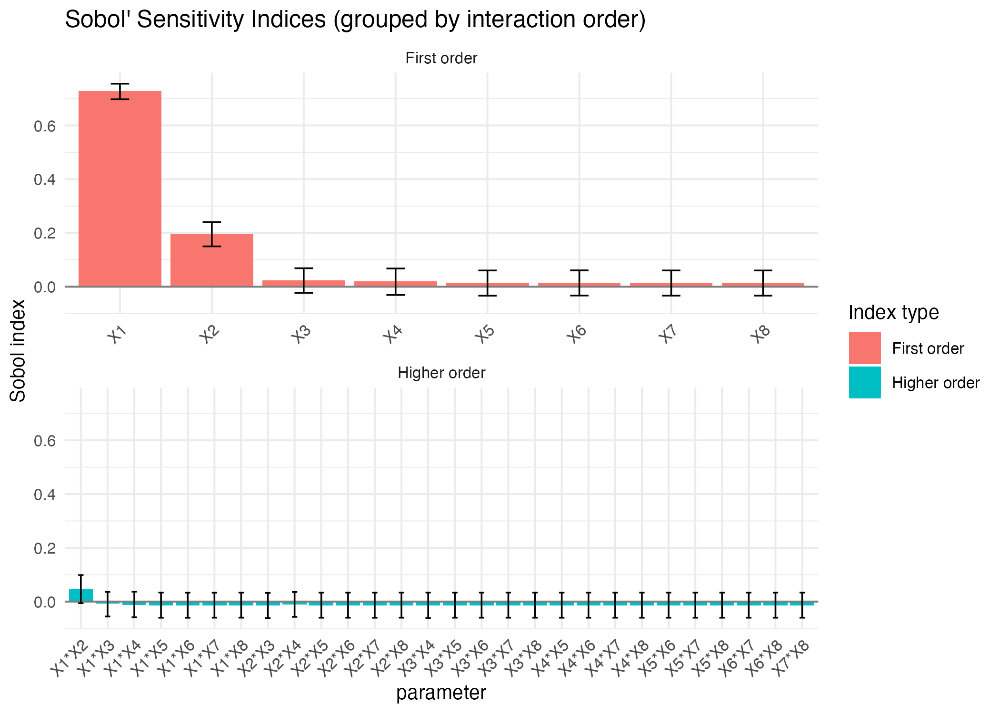
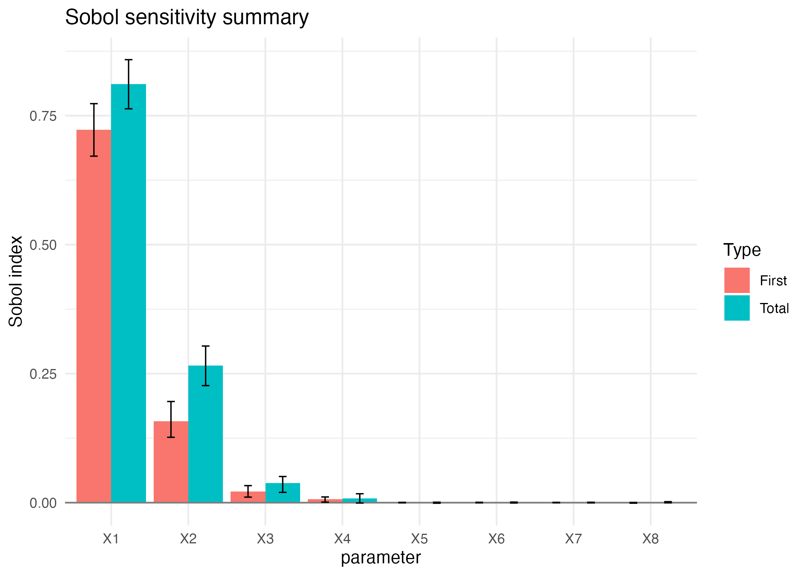
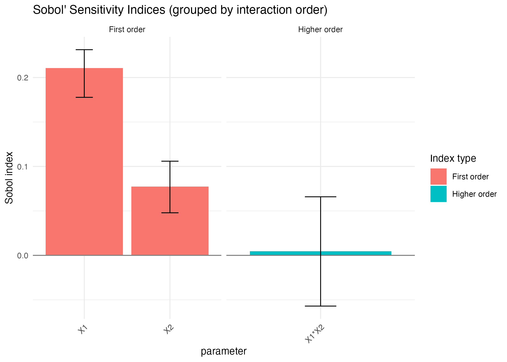
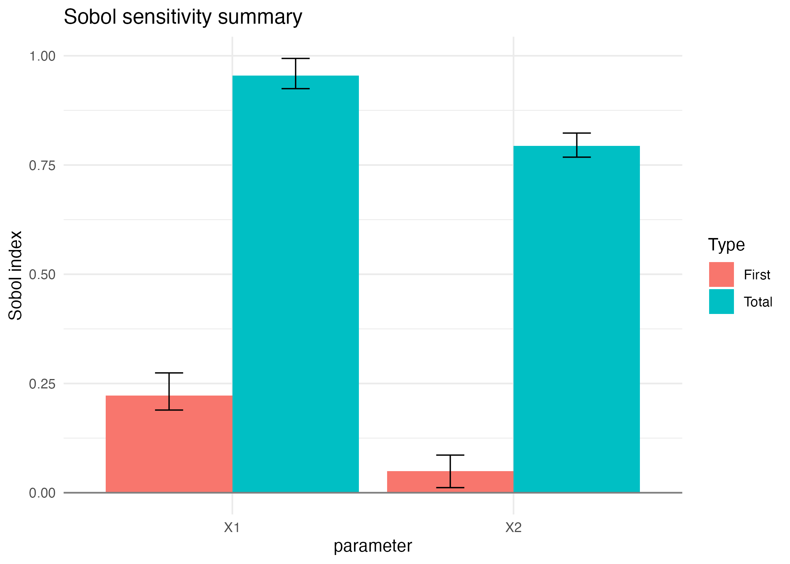
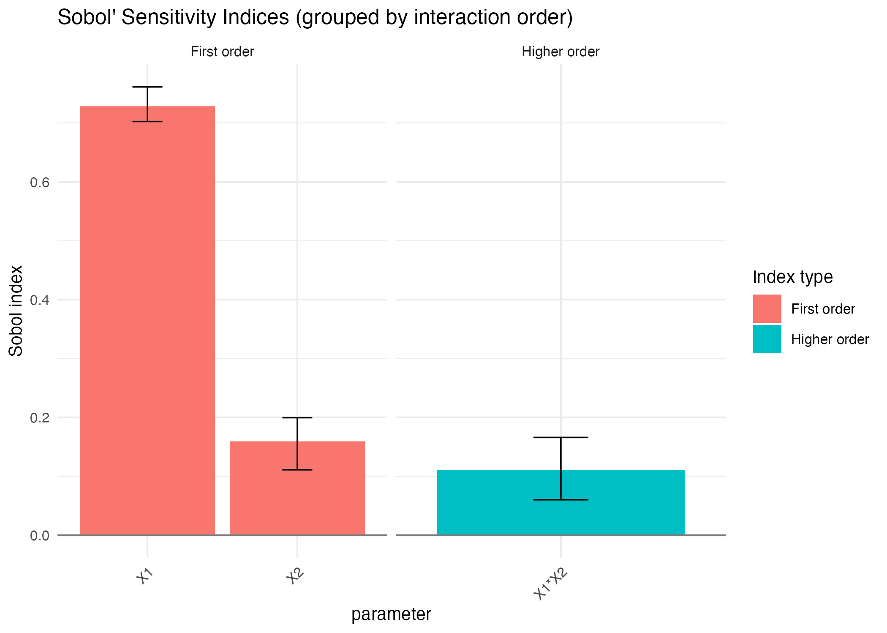
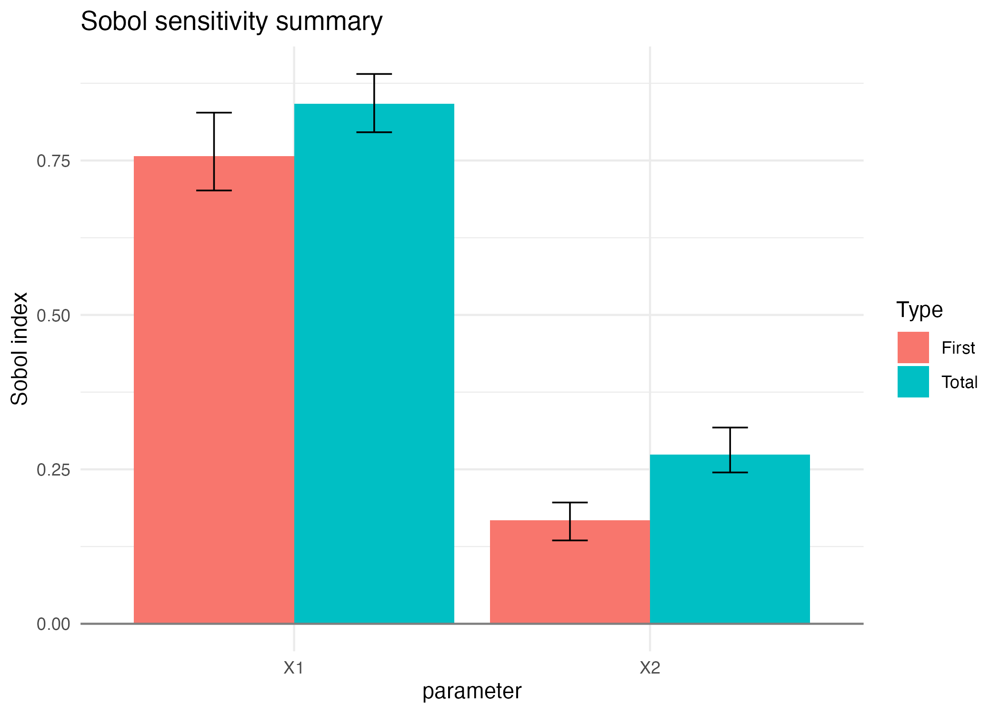
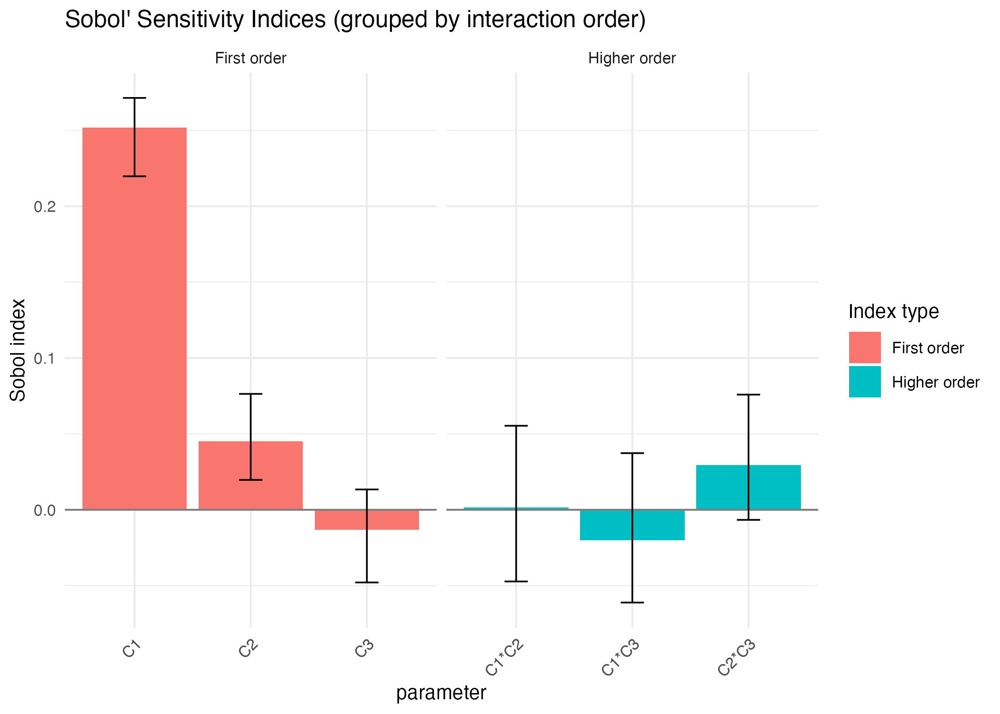
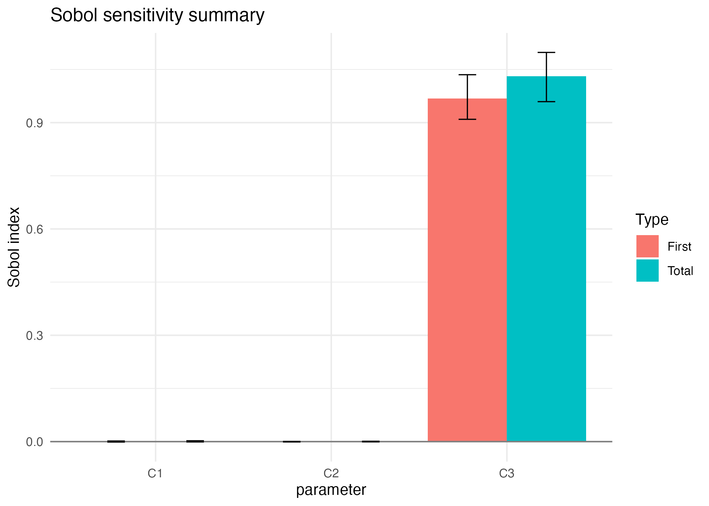

Sobol4R: Sobol indices for stochastic models
Frédéric Bertrand
Cedric, Cnam, Parisfrederic.bertrand@lecnam.net
2025-11-25
Source:vignettes/Sobol4R_vignette_stochastic.Rmd
Sobol4R_vignette_stochastic.RmdIntroduction
This vignette illustrates the use of the Sobol4R package to compute Sobol indices for deterministic and stochastic versions of the classical Sobol g function.
The designs are generated with sensitivity::sobol and
the models are provided by Sobol4R, in particular
-
sobol_g_functionfor the deterministic g function
-
sobol_g2_additive_noisefor a version of the model with additive Gaussian noise
-
sobol_g2_with_covariate_noisefor a version with covariate dependent noise
The stochastic models can be combined with the generic quantity of
interest wrapper sobol4r_qoi.
Deterministic Sobol g function
Order 1 and Total via sensitivity::sobol()
n <- 1e4
p <- 8
X1 <- data.frame(matrix(runif(p * n), nrow = n))
X2 <- data.frame(matrix(runif(p * n), nrow = n))
sob_det <- sobol4r_design(X1 = X1, X2 = X2, order = 2, nboot = 50)
Y <- sobol_g_function(sob_det$X)
sensitivity::tell(sob_det, Y)
print(sob_det)
#>
#> Call:
#> sensitivity::sobol(model = NULL, X1 = X1, X2 = X2, order = order, nboot = nboot)
#>
#> Model runs: 370000
#>
#> Sobol indices
#> original bias std. error min. c.i. max. c.i.
#> X1 0.729316561 -0.001275439 0.01545021 0.697616109 0.75539527
#> X2 0.196090766 -0.001421671 0.02154300 0.149982732 0.24012332
#> X3 0.023981516 -0.003065429 0.02254195 -0.022845225 0.06862620
#> X4 0.020825373 -0.001493134 0.02304567 -0.030743385 0.06770798
#> X5 0.014039354 -0.001739104 0.02286833 -0.033429593 0.06035033
#> X6 0.014708915 -0.001733720 0.02289314 -0.032962767 0.06076802
#> X7 0.014340074 -0.001703916 0.02284889 -0.033229092 0.06040784
#> X8 0.014309301 -0.001662739 0.02293222 -0.033269603 0.06032436
#> X1*X2 0.046865217 0.002550570 0.02713540 -0.006026338 0.09871445
#> X1*X3 -0.007464372 0.002580981 0.02266589 -0.055481253 0.03639582
#> X1*X4 -0.012404646 0.001762228 0.02312736 -0.058467170 0.03691738
#> X1*X5 -0.014058843 0.001714964 0.02288889 -0.060132470 0.03373491
#> X1*X6 -0.014241259 0.001687695 0.02286621 -0.060184648 0.03336696
#> X1*X7 -0.014157446 0.001683380 0.02286251 -0.059923900 0.03328664
#> X1*X8 -0.013976941 0.001747537 0.02286627 -0.059862035 0.03358057
#> X2*X3 -0.014705090 0.001886857 0.02316433 -0.061183556 0.03236541
#> X2*X4 -0.011390929 0.001646346 0.02302253 -0.056859886 0.03564363
#> X2*X5 -0.014127670 0.001736261 0.02286688 -0.060043209 0.03352002
#> X2*X6 -0.014110288 0.001714867 0.02288131 -0.060001925 0.03356799
#> X2*X7 -0.014205955 0.001744655 0.02289871 -0.060152873 0.03353539
#> X2*X8 -0.014017457 0.001746709 0.02287928 -0.059955448 0.03372764
#> X3*X4 -0.014248428 0.001739508 0.02291249 -0.060842516 0.03370856
#> X3*X5 -0.014110240 0.001724878 0.02287689 -0.059965627 0.03358561
#> X3*X6 -0.014073724 0.001716482 0.02288471 -0.059961372 0.03366554
#> X3*X7 -0.014101779 0.001732930 0.02287970 -0.059981310 0.03364722
#> X3*X8 -0.014116726 0.001720118 0.02288282 -0.060001796 0.03358277
#> X4*X5 -0.014141193 0.001723617 0.02288695 -0.060047751 0.03358634
#> X4*X6 -0.014170593 0.001730109 0.02288030 -0.060094990 0.03351575
#> X4*X7 -0.014136512 0.001728798 0.02287319 -0.060018980 0.03354256
#> X4*X8 -0.014114087 0.001730295 0.02288118 -0.060019126 0.03357095
#> X5*X6 -0.014134265 0.001724749 0.02287874 -0.060037134 0.03356052
#> X5*X7 -0.014132876 0.001725326 0.02287857 -0.060034674 0.03355894
#> X5*X8 -0.014133657 0.001724984 0.02287906 -0.060041703 0.03355821
#> X6*X7 -0.014133660 0.001724777 0.02287928 -0.060041776 0.03356007
#> X6*X8 -0.014132645 0.001725332 0.02287910 -0.060038087 0.03355843
#> X7*X8 -0.014134667 0.001725199 0.02287888 -0.060038360 0.03356007
autoplot.sobol(sob_det, ncol = 1)
Order 1 and Total via sensitivity::sobol2007()
n <- 1e4
p <- 8
X1 <- data.frame(matrix(runif(p * n), nrow = n))
X2 <- data.frame(matrix(runif(p * n), nrow = n))
sob_det_2007 <- sobol4r_design(
X1 = X1,
X2 = X2,
nboot = 50,
type = "sobol2007"
)
Y <- sobol_g_function(sob_det_2007$X)
sensitivity::tell(sob_det_2007, Y)
print(sob_det_2007)
#>
#> Call:
#> sensitivity::sobol2007(model = NULL, X1 = X1, X2 = X2, nboot = nboot)
#>
#> Model runs: 100000
#>
#> First order indices:
#> original bias std. error min. c.i. max. c.i.
#> X1 7.226361e-01 4.613664e-04 0.0250889263 0.6714746826 0.7732251982
#> X2 1.577506e-01 1.759382e-03 0.0147669207 0.1267157769 0.1960646433
#> X3 2.165769e-02 -1.967632e-04 0.0048301391 0.0107498709 0.0330404949
#> X4 6.966461e-03 2.491303e-04 0.0027234991 0.0010555430 0.0110881879
#> X5 2.104365e-04 5.952562e-05 0.0002402671 -0.0003020478 0.0005739324
#> X6 2.982284e-04 6.010743e-05 0.0002228694 -0.0003302314 0.0007606267
#> X7 5.419411e-05 -3.806394e-05 0.0001951958 -0.0002465745 0.0005861267
#> X8 -1.885046e-04 4.378118e-05 0.0002970498 -0.0009607355 0.0003931021
#>
#> Total indices:
#> original bias std. error min. c.i. max. c.i.
#> X1 0.8114688026 1.482182e-03 0.0209887057 0.7632449114 0.8584297401
#> X2 0.2657395655 9.298296e-04 0.0162802955 0.2268143380 0.3035468573
#> X3 0.0380832600 7.402175e-04 0.0070172023 0.0199547275 0.0506997801
#> X4 0.0080414206 -4.546740e-04 0.0040901847 -0.0006915014 0.0172996762
#> X5 -0.0000740697 -9.898440e-05 0.0004524606 -0.0010437911 0.0009069280
#> X6 0.0001245399 -8.659793e-05 0.0003678083 -0.0006133636 0.0011593635
#> X7 0.0001987163 2.279008e-05 0.0003327657 -0.0004079122 0.0007984449
#> X8 0.0007342818 -7.943007e-05 0.0004619398 -0.0003188098 0.0019252166
autoplot.sobol2007(sob_det_2007)
Random effect on the output
We restrict the g function to the first two inputs and add a Gaussian noise term with zero mean and unit variance.
Order 1 and Total via sensitivity::sobol()
sob_noise_add <- sobol4r_design(X1 = X1[, 1:2], X2 = X2[, 1:2], order = 2, nboot = 50, type = "sobol")
Y <- sobol_g2_additive_noise(sob_noise_add$X)
sensitivity::tell(sob_noise_add, Y)
print(sob_noise_add)
#>
#> Call:
#> sensitivity::sobol(model = NULL, X1 = X1, X2 = X2, order = order, nboot = nboot)
#>
#> Model runs: 40000
#>
#> Sobol indices
#> original bias std. error min. c.i. max. c.i.
#> X1 0.210591303 0.002895381 0.01339506 0.17772950 0.23133242
#> X2 0.077394970 0.001182011 0.01465379 0.04788607 0.10591187
#> X1*X2 0.004634588 -0.002890048 0.02552980 -0.05706284 0.06587072
autoplot.sobol(sob_noise_add)
Order 1 and Total via sensitivity::sobol2007()
sob_noise_add <- sobol4r_design(X1 = X1[, 1:2], X2 = X2[, 1:2], nboot = 50, type = "sobol2007")
Y <- sobol_g2_additive_noise(sob_noise_add$X)
sensitivity::tell(sob_noise_add, Y)
print(sob_noise_add)
#>
#> Call:
#> sensitivity::sobol2007(model = NULL, X1 = X1, X2 = X2, nboot = nboot)
#>
#> Model runs: 40000
#>
#> First order indices:
#> original bias std. error min. c.i. max. c.i.
#> X1 0.22249900 -0.0007019890 0.02086091 0.18921641 0.27421970
#> X2 0.04947403 0.0009910796 0.01799606 0.01167035 0.08611989
#>
#> Total indices:
#> original bias std. error min. c.i. max. c.i.
#> X1 0.9545870 -1.644061e-03 0.01536769 0.9247617 0.9938948
#> X2 0.7936756 7.622615e-05 0.01269614 0.7679734 0.8230877
autoplot.sobol2007(sob_noise_add)
Quantity of interest based on repeated runs
Instead of a single noisy run, we can focus on a quantity of interest, here the conditional mean of the output given the inputs. This is approximated by repeated calls to the stochastic model.
Order 1 and Total via sensitivity::sobol()
sob_noise_const_qoi <- sobol4r_qoi_indices(
model = sobol_g2_additive_noise,
X1 = X1[, 1:2],
X2 = X2[, 1:2],
order = 2,
nboot = 50,
type = "sobol")
print(sob_noise_const_qoi)
#>
#> Call:
#> sensitivity::sobol(model = NULL, X1 = X1, X2 = X2, order = order, nboot = nboot)
#>
#> Model runs: 40000
#>
#> Sobol indices
#> original bias std. error min. c.i. max. c.i.
#> X1 0.7281363 -0.002326129 0.01396703 0.7023478 0.7611659
#> X2 0.1593779 0.001107771 0.02101239 0.1111086 0.1996645
#> X1*X2 0.1115358 0.001362466 0.02579994 0.0601593 0.1660907
autoplot.sobol(sob_noise_const_qoi)
Order 1 and Total via sensitivity::sobol2007()
sob_noise_const_qoi <- sobol4r_qoi_indices(
model = sobol_g2_additive_noise,
X1 = X1[, 1:2],
X2 = X2[, 1:2],
nboot = 50,
type = "sobol2007")
print(sob_noise_const_qoi)
#>
#> Call:
#> sensitivity::sobol2007(model = NULL, X1 = X1, X2 = X2, nboot = nboot)
#>
#> Model runs: 40000
#>
#> First order indices:
#> original bias std. error min. c.i. max. c.i.
#> X1 0.7569676 0.005520727 0.02420193 0.7014583 0.8274716
#> X2 0.1676229 0.002125275 0.01531202 0.1349189 0.1963376
#>
#> Total indices:
#> original bias std. error min. c.i. max. c.i.
#> X1 0.8418682 0.0009028623 0.02325515 0.7957662 0.8900772
#> X2 0.2740287 -0.0025875328 0.01601914 0.2449723 0.3176801
autoplot.sobol2007(sob_noise_const_qoi)
Covariate dependent noise
We now add a third input which controls the mean of the Gaussian noise term. The mean is equal to the third input, and the variance is fixed.
X1_cov <- data.frame(
C1 = runif(n),
C2 = runif(n),
C3 = runif(n, min = 1, max = 100)
)
X2_cov <- data.frame(
C1 = runif(n),
C2 = runif(n),
C3 = runif(n, min = 1, max = 100)
)Order 1 and Total via sensitivity::sobol()
sob_cov_single <- sobol4r_design(X1 = X1_cov, X2 = X2_cov, order = 2, nboot = 50, type = "sobol")
Y <- sobol_g2_additive_noise(sob_cov_single$X)
sensitivity::tell(sob_cov_single, Y)
print(sob_cov_single)
#>
#> Call:
#> sensitivity::sobol(model = NULL, X1 = X1, X2 = X2, order = order, nboot = nboot)
#>
#> Model runs: 70000
#>
#> Sobol indices
#> original bias std. error min. c.i. max. c.i.
#> C1 0.251783186 0.0003585397 0.01280945 0.219732278 0.27135547
#> C2 0.045268520 0.0002280838 0.01445710 0.019678256 0.07635617
#> C3 -0.013152204 0.0029467703 0.01526048 -0.047879303 0.01339144
#> C1*C2 0.001516282 -0.0018191025 0.02286151 -0.047225558 0.05535690
#> C1*C3 -0.019992459 -0.0013159148 0.02519739 -0.061114785 0.03731931
#> C2*C3 0.029377180 -0.0033125463 0.02019137 -0.006645643 0.07587689
autoplot.sobol(sob_cov_single)
Order 1 and Total via sensitivity::sobol2007()
sob_cov_qoi <- sobol4r_qoi_indices(
model = sobol_g2_with_covariate_noise,
X1 = X1_cov,
X2 = X2_cov,
nboot = 50,
type = "sobol2007")
print(sob_cov_qoi)
#>
#> Call:
#> sensitivity::sobol2007(model = NULL, X1 = X1, X2 = X2, nboot = nboot)
#>
#> Model runs: 50000
#>
#> First order indices:
#> original bias std. error min. c.i. max. c.i.
#> C1 0.0003333998 -2.935862e-05 0.0007910252 -0.0012618253 0.0017225779
#> C2 -0.0001240202 1.224430e-05 0.0003261510 -0.0009422672 0.0005263487
#> C3 0.9683764786 -4.004989e-03 0.0299272215 0.9093569619 1.0351947827
#>
#> Total indices:
#> original bias std. error min. c.i. max. c.i.
#> C1 0.0007208594 -7.186279e-05 0.0007702269 -0.0009344723 0.0023805464
#> C2 0.0003281183 1.261821e-05 0.0003896499 -0.0006923641 0.0009725581
#> C3 1.0310911191 6.028381e-03 0.0287721499 0.9591583461 1.0980545363
autoplot.sobol2007(sob_cov_qoi)